작업 흐름
- 입력
- 기술 내용(구조, 흐름, 실제 파일 · 메시지 · 지표 이름)을 4–8개 장으로 나눈 스토리보드
- 영상
- 모든 프레임을
renderAt(t)로 그림. 장 이동, 0.75× · 0.5× 재생을 지원하는 플레이어 - 설명 · 용어집
- 영상 페이지 안의 노트로 두 페이지 생성
- 검증
- 스틸 렌더, 플레이어 자동 점검, 별도 에이전트의 전문가 리뷰
- 추가 형식
- 9:16 세로 컷, three.js로 그리는 설명 방식 7가지, 다른 페이지 안의 스크롤 재생
S=.claude/skills/tech-motion-explainer
cp -r $S/starter/assets assets
mkdir my-topic && cp $S/template.html my-topic/index.html
node $S/scripts/render.mjs my-topic/index.html /tmp/stills --stills 3,10,20요구 사항: Node 18+ · Playwright Chromium, ffmpeg(MP4). 단계별 순서는 SKILL.md에 있습니다.
샘플
이 스킬로 만든 페이지입니다. 카드를 누르면 새 탭에서 그 페이지(jungrok5.github.io)를 열고 브라우저에서 재생합니다.
주제 12개 2D 캔버스 · 영상 · 설명 · 용어집 세트 · MP4
MMO 게임 서버와 네트워크에서 생기는 일을 다룹니다. 정지 화면은 각 영상의 중간 장면입니다.
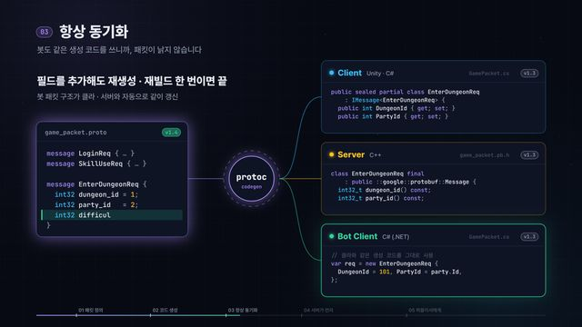
패킷과 개발 파이프라인 · 1:04패킷 정의 하나로, 개발부터 라이브까지
프로토버퍼로 패킷을 정의하고 클라 · 서버 · 봇 코드를 생성해, 서버 선개발 테스트와 퍼블리셔 부하 테스트까지 잇는 흐름
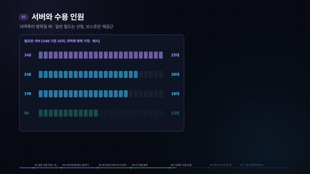
패킷과 개발 파이프라인 · 1:37이동 패킷, 바이트를 줄이면 무슨 일이?
같은 이동 정보를 34B · 24B · 19B · 8B로 담을 때 송신 트래픽 · 비용 · 서버 대수 · 수용 인원이 얼마나 달라지는지, 프로토버퍼는 어떻게 쓰는지
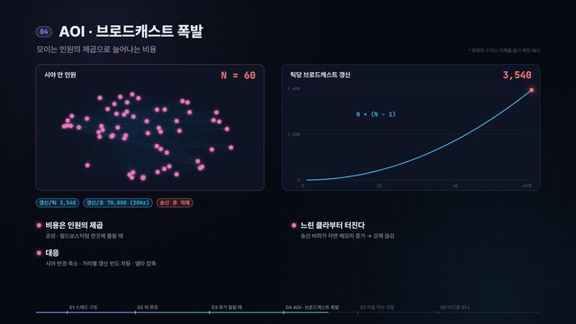
서버 안에서 · 1:21서버 안의 50ms, 무슨 일이 일어날까?
스레드 구조와 틱 루프, 큐 적체 · AOI 브로드캐스트 · DB · 락 · GC가 틱을 늦추는 방식과 볼 지표
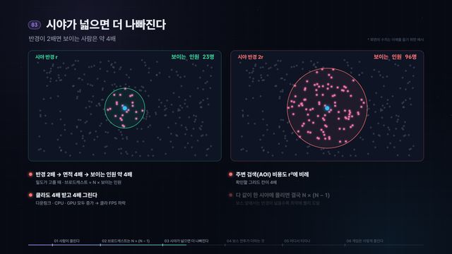
서버 안에서 · 1:22보스가 뜨면 왜 렉이 걸릴까?
인원이 몰리면 갱신이 N×(N−1)로 늘고, 시야가 넓으면 더 나빠지는 이유와 서버 · 망 · 클라에서 터지는 지점
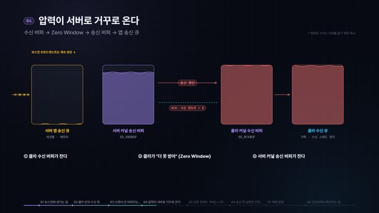
서버 안에서 · 1:49클라가 느리면 서버도 느려진다
클라 수신 큐 → Zero Window → 서버 송신 큐로 압력이 올라오는 과정, 송신 큐 상한의 역할, 클라 · 서버 쪽 해결 방법
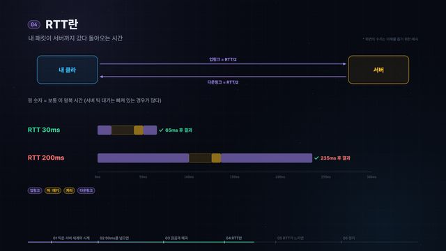
네트워크와 TCP · 1:2350ms와 RTT, 렉은 어디서 생길까?
서버 틱 처리시간이 50ms를 넘을 때와 RTT가 느릴 때 각각 무엇이 달라지는지
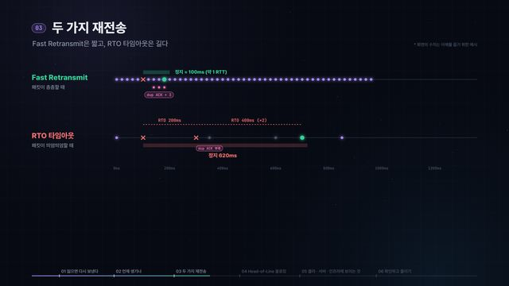
네트워크와 TCP · 1:21사라진 패킷 하나가 전부를 멈춘다
TCP 재전송이 언제 생기는지(빠른 재전송 · RTO · HOL 블로킹), 클라 · 서버 · 인프라에서 보이는 현상과 지표
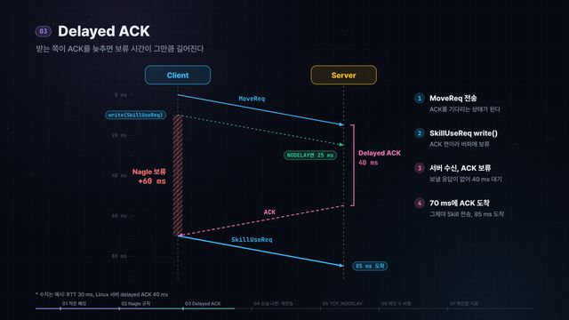
네트워크와 TCP · 1:41Nagle과 TCP_NODELAY
작은 게임 패킷이 Nagle · Delayed ACK 때문에 늦어지고 손실 때 RTO까지 기다리는 이유, TCP_NODELAY와 틱 배칭
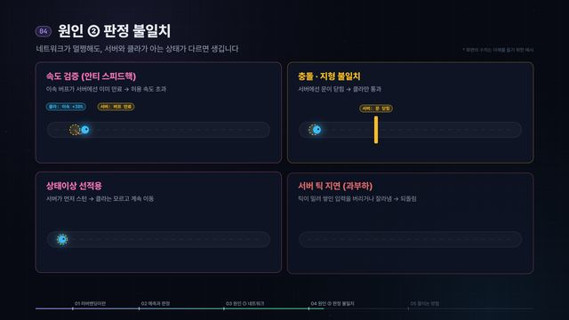
클라이언트와 체감 · 1:07앞으로 달렸는데, 왜 뒤로 끌려갈까?
러버밴딩이 생기는 구조(클라 예측 · 서버 판정)와 원인, 줄이는 방법
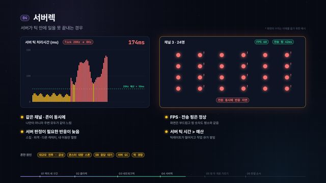
클라이언트와 체감 · 1:13렉 걸렸다. 서버 탓일까, 내 탓일까?
클라렉 · 네트워크렉 · 서버렉을 프레임타임 · 전송 핑 · 앱 핑 · 영향 범위로 가르는 순서
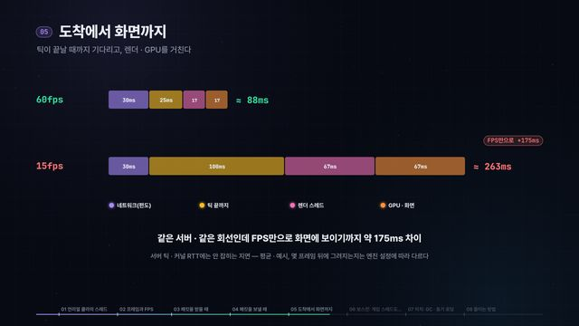
클라이언트와 체감 · 1:52언리얼 클라의 스레드와 렉
게임 · 렌더 · GPU 스레드와 자체 리시브 · 센드 스레드, FPS가 패킷 적용과 화면 지연에 주는 영향, 보스전 GPU 대기와 히치
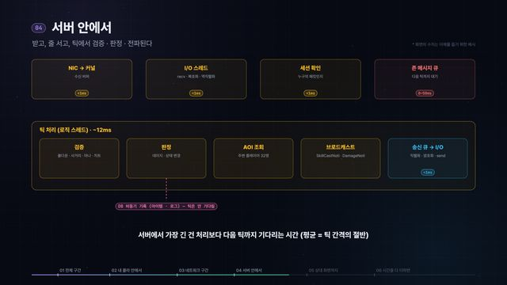
클라이언트와 체감 · 1:25내 스킬 하나가 상대 화면에 뜨기까지
입력부터 네트워크 · 서버 틱 · 다운링크 · 상대 클라 보간과 렌더까지 단계별 지연과 합계
설명 방식 7가지 가로(PC) = 본편 전체 · 세로(모바일) = 20초 요약
위 주제를 그 주제에 맞는 방식으로 다시 그린 페이지입니다. 그림체는 주제의 실제 세계(게임 존 지도, 서버 랙, 회의실 화이트보드)에서 가져옵니다. 방식을 고르는 기준은 STYLES.md에 있습니다.
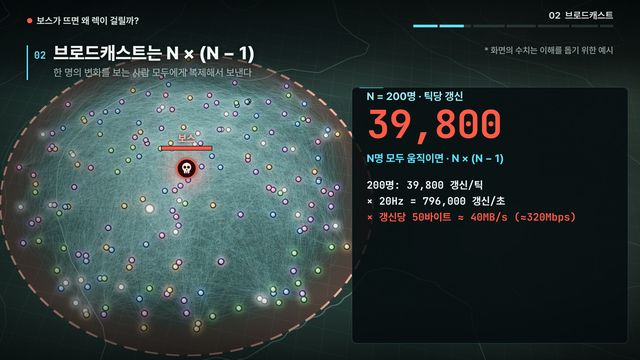
3D · three.js · 1:22흐름을 빛으로make the invisible flow visible
보스가 뜨면 왜 렉이 걸릴까?밤의 게임 존 지도 위에서 플레이어마다 보내는 갱신 패킷이 보는 사람 모두에게 흘러가는 모습을 빛으로 그립니다. 200명이면 39,800개입니다. 광역기 장판과 운영 지표 차트까지 본편 6장 전체를 담았습니다.
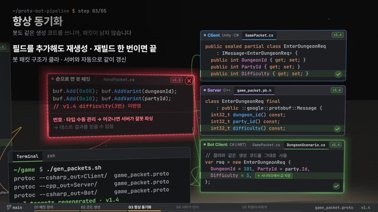
3D · three.js · 1:04실물을 공간에put the real artifacts in space
패킷 정의 하나로, 개발부터 라이브까지책상 위 에디터의 .proto, 터미널의 protoc, 생성된 세 파일, 봇 · 서버 로그, 부하 테스트 대시보드를 차례로 지나갑니다. 필드 하나를 추가하면 세 파일이 함께 바뀌는 과정도 보여 줍니다.
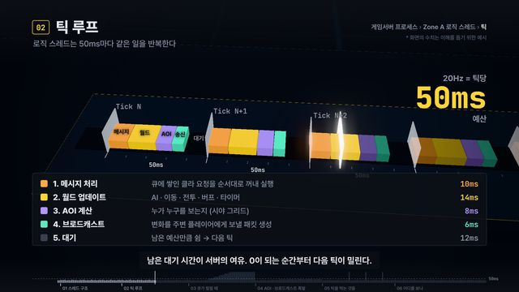
3D · three.js · 1:21분해해 들어가기open it up
서버 안의 50ms, 무슨 일이 일어날까?랙에서 서버를 꺼내 열고, 프로세스 → 스레드 → 틱 하나 → AOI 단계로 들어갑니다. 프로파일러 타임라인 위에서 큐, AOI, DB, 락, GC가 틱을 늘리는 모습을 그립니다.
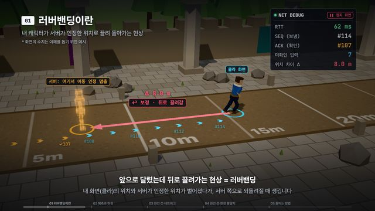
3D · three.js · 1:07게임 화면 재현show it in the game
앞으로 달렸는데, 왜 뒤로 끌려갈까?플레이어 화면에서 끌려가는 순간을 보여 준 뒤, 되감아 넷코드 디버그 화면(예측 위치, 서버 유령, 입력 번호, 보정 벡터)으로 다시 봅니다. 원인마다 게임 안에서 재현합니다.
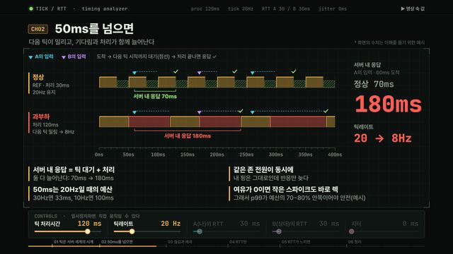
2D 캔버스 · 1:23직접 조작해 보기explorable
50ms와 RTT, 렉은 어디서 생길까?타이밍 분석기 화면입니다. 재생하면 진행자가 노브를 돌리며 설명하고, 멈추면 틱 처리시간, 틱레이트, RTT, 지터 슬라이더로 누가 얼마나 늦는지 직접 바꿔 볼 수 있습니다.
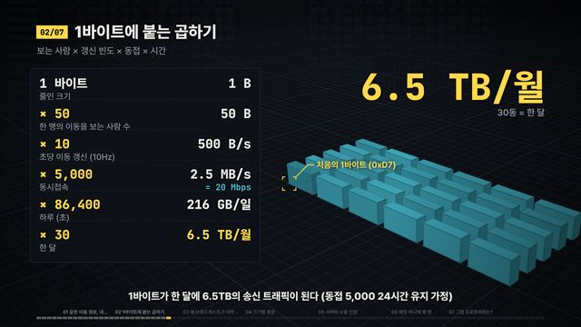
3D · three.js · 1:37바닥부터 쌓기build it up
이동 패킷, 바이트를 줄이면 무슨 일이?비트 8칸이 1바이트가 되고, × 보는 사람 × 갱신 × 동접 × 시간으로 복제돼 월 6.5TB 도시가 됩니다. 헥스 덤프와 패킷 디섹터 색으로 쌓아 올립니다.
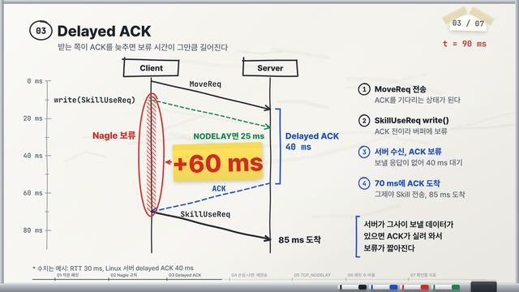
2D 캔버스 · 1:41그려 가며 설명draw while reasoning
Nagle과 TCP_NODELAY회의실 화이트보드에 시퀀스 다이어그램을 마커로 그려 가며 추론합니다. 보류 구간에 빗금을 치고 +60 ms 포스트잇을 붙인 뒤, 옆에 NODELAY 경우를 다시 그리고 ss · nstat 출력에 동그라미를 칩니다.
임베드 다른 페이지 안에서 스크롤로 재생
재생 버튼 대신 독자가 스크롤한 위치가 시간 t가 됩니다. 한 파일에 가로(16:9)와 세로(4:5) 구도가 함께 들어 있습니다. 만드는 법은 EMBED.md에 있습니다.
링크
- SKILL.md 워크플로 · 규칙 · 장치 카탈로그
- 폴더 template · scripts · starter
- README.md 빠른 시작
- references/STYLES.md 설명 방식 7가지 · 고르는 법
- references/STYLE-ZOOM.md 분해 · 기법 노트
- references/STYLE-GLOW.md 흐름 · 기법 노트
- references/STYLE-GLASS.md 실물 · 기법 노트
- references/EXPERT-REVIEW.md 전문가 리뷰 프롬프트
- references/EMBED.md 스크롤 임베드
- references/LESSONS.md 겪은 문제와 해결